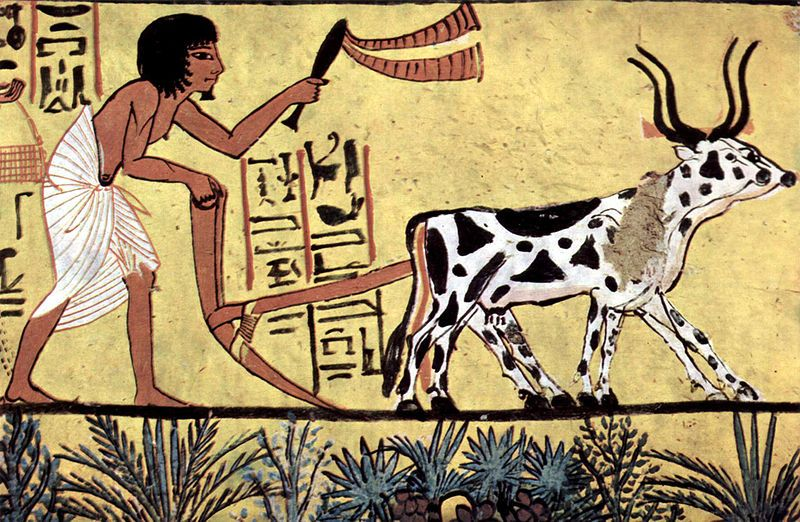
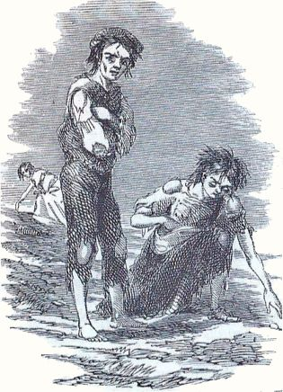

What Is a City?
Schedule
Lectures
Handouts
Siena
Quizzes
Part 2
Cities First--rural development later
Cities first, rural development later
← Previous lecture
The Evolution of Cities
Next lecture →
Urban Planning Modernism
Contents · 6 slides
Cities First--rural development later
Agriculture first?
today agriculture depends on cities
Rural productivity
Irish Potato Famine
cities industries move to the country
1
Cities First--rural development later
Jane Jacobs
2
Agriculture first?
The current dogma.
3
today agriculture depends on cities
4
Rural productivity
Built on a foundation of city productivity.

5
Irish Potato Famine
The very core of their subjection “was the systematic suppression of city industry.”

6
cities industries move to the country
“Between the 11th and 15th centuries, European weaving was revolutionized in the cities.
← Previous lecture
The Evolution of Cities
Next lecture →
Urban Planning Modernism